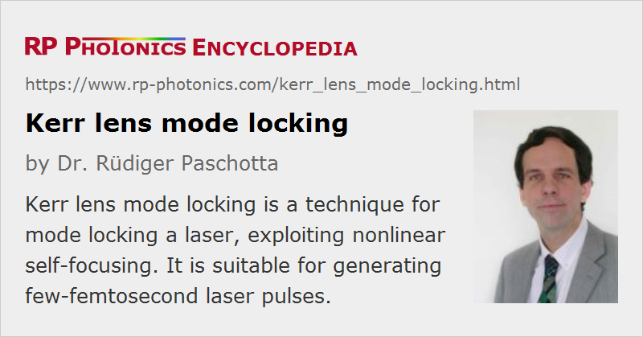

Kerr Lens Mode Locking
Acronym: KLM
Definition: a technique for mode locking a laser, exploiting nonlinear self-focusing
More general terms: passive mode locking
German: Kerr-Linsen-Modenkopplung
Categories: light pulses, methods
How to cite the article; suggest additional literature
Author: Dr. Rüdiger Paschotta
Kerr lens mode locking is a technique of passive mode locking a laser, using an artificial saturable absorber based on Kerr lensing in the gain medium. The latter effect causes a reduction in the beam size for high optical intensities. Via two different mechanisms, this can effectively act like a fast saturable absorber:
- In the case of hard aperture KLM, the Kerr lens reduces the optical losses at an aperture which the beam must pass in each resonator round trip.
- In the case of soft aperture KLM, the Kerr lens leads to a better overlap of laser and pump beam, and thus to a higher gain for the peak of the pulse. That increase of gain has a similar effect as a decrease of losses; both effects increase the net round-trip gain.
The article on passive mode locking explains how a saturable absorber leads to mode locking.
Kerr lens mode locking has enabled the generation of the shortest pulses with durations down to ≈ 5 fs in Ti:sapphire lasers. Its strength lies in the very fast response and the fact that no special saturable absorber medium is required. The main disadvantage is the need to operate the laser close to a stability limit of its resonator, because otherwise the Kerr lensing effect is too weak. As a consequence, long-term stable operation is difficult to achieve, and the resonator design is a difficult task. Also, reliable self-starting mode locking is often not achieved. Often such lasers start in a noisy operation mode, not producing ultrashort pulses, after being turned on, and switch to mode-locked operation only after an external trigger, e.g. when a resonator mirror is manually tapped in order to stimulate power fluctuations.
KLM is sometimes called self mode locking because it does not require a visible saturable absorber device. Its first observation [1], where that term was introduced, has not yet been explained with the influence of nonlinear focusing based on the Kerr effect; that was provided by others shortly after that first report [2].
A kind of KLM has been applied to vertical external-cavity surface-emitting lasers (VECSELs) [16]. Their gain medium does not exhibit a true Kerr nonlinearity, but a similar effect based on gain saturation and the dependence of refractive index on the carrier density. This typically leads to a negative index change due to gain saturation, but not with an index change in proportion to the momentary optical intensity.
Comprehensive modeling of Kerr lens mode locking is difficult due to the complicated spatio-temporal dynamics; note that the beam radius varies during the temporal pulse shape. Simplified models can at least roughly predict the achieved modulation depth and saturation power, and thus assist in finding a suitable resonator design.
A possible alternative to KLM is passive mode locking with a real saturable absorber, e.g. with a SESAM. It is also possible to combine KLM and a SESAM with particularly broad reflection bandwidth to achieve self-starting mode locking and very short pulses.
Suppliers
The RP Photonics Buyer's Guide contains 6 suppliers for Kerr lens mode-locked lasers. Among them:
Questions and Comments from Users
Here you can submit questions and comments. As far as they get accepted by the author, they will appear above this paragraph together with the author’s answer. The author will decide on acceptance based on certain criteria. Essentially, the issue must be of sufficiently broad interest.
Please do not enter personal data here; we would otherwise delete it soon. (See also our privacy declaration.) If you wish to receive personal feedback or consultancy from the author, please contact him e.g. via e-mail.
By submitting the information, you give your consent to the potential publication of your inputs on our website according to our rules. (If you later retract your consent, we will delete those inputs.) As your inputs are first reviewed by the author, they may be published with some delay.
Bibliography
| [1] | D. E. Spence, P. N. Kean, W. Sibbett, “60-fsec pulse generation from a self-mode-locked Ti:sapphire laser”, Opt. Lett. 16 (1), 42 (1991), doi:10.1364/OL.16.000042 |
| [2] | F. Salin et al., “Modelocking of Ti:sapphire lasers and self-focusing: a Gaussian approximation”, Opt. Lett. 16 (21), 1674 (1991), doi:10.1364/OL.16.001674 |
| [3] | S. Chen and J. Wang, “Self-starting issues of passive self-focusing mode locking”, Opt. Lett. 16 (21), 1689 (1991), doi:10.1364/OL.16.001689 |
| [4] | T. Brabec et al., “Kerr lens mode locking”, Opt. Lett. 17 (18), 1292 (1992), doi:10.1364/OL.17.001292 |
| [5] | Piché et al., “Self-mode locking of solid-state lasers without apertures” (soft aperture mode locking), Opt. Lett. 18 (13), 1041 (1993), doi:10.1364/OL.18.001041 |
| [6] | J. Herrmann, “Theory of Kerr-lens mode locking: role of self-focusing and radially varying gain”, J. Opt. Soc. Am. B 11 (3), 498 (1994), doi:10.1364/JOSAB.11.000498 |
| [7] | Y. Chou et al., “Measurements of the self-starting threshold of Kerr-lens mode-locking lasers”, Opt. Lett. 19 (8), 566 (1994), doi:10.1364/OL.19.000566 |
| [8] | G. Cerullo et al., “Resonators for Kerr-lens mode-locked femtosecond Ti:sapphire lasers”, Opt. Lett. 19 (11), 807 (1994), doi:10.1364/OL.19.000807 |
| [9] | G. Cerullo et al., “Self-starting Kerr-lens mode locking of a Ti:sapphire laser”, Opt. Lett. 19 (14), 1040 (1994), doi:10.1364/OL.19.001040 |
| [10] | I. P. Christov et al., “Mode locking with a compensated space–time astigmatism”, Opt. Lett. 20 (20), 2111 (1995), doi:10.1364/OL.20.002111 |
| [11] | D. H. Sutter et al., “Semiconductor saturable-absorber mirror-assisted Kerr lens modelocked Ti:sapphire laser producing pulses in the two-cycle regime”, Opt. Lett. 24 (9), 631 (1999), doi:10.1364/OL.24.000631 |
| [12] | U. Morgner et al., “Sub-two cycle pulses from a Kerr-lens mode-locked Ti:sapphire laser”, Opt. Lett. 24 (6), 411 (1999), doi:10.1364/OL.24.000411 |
| [13] | S. Uemura and K. Torizuka, “Generation of 12-fs pulses from a diode-pumped Kerr-lens mode-locked Cr:LiSAF laser”, Opt. Lett. 24 (11), 780 (1999), doi:10.1364/OL.24.000780 |
| [14] | N. Tolstik et al., “Kerr-lens mode-locked Cr:ZnS laser”, Opt. Lett. 38 (3), 299 (2013), doi:10.1364/OL.38.000299 |
| [15] | H. Zhao and A. Major, “Powerful 67 fs Kerr-lens mode-locked prismless Yb:KGW oscillator”, Opt. Express 21 (26), 31846 (2013), doi:10.1364/OE.21.031846 |
| [16] | A. R. Albrecht et al., “Exploring ultrafast negative Kerr effect for mode-locking vertical external-cavity surface-emitting lasers”, Opt. Express 21 (23), 28801 (2013), doi:10.1364/OE.21.028801 |
| [17] | S. Yefet and A. Pe'er, “A review of cavity design for Kerr lens mode-locked solid-state lasers”, Appl. Sci. 3 (4), 694 (2013), doi:10.3390/app3040694 |
| [18] | J. Brons et al., “Energy scaling of Kerr-lens mode-locked thin-disk oscillators”, Opt. Lett. 39 (22), 6442 (2014), doi:10.1364/OL.39.006442 |
| [19] | S. Kimura et al., “Kerr-lens mode locking above a 20 GHz repetition rate”, Optica 6 (5), 532 (2019), doi:10.1364/OPTICA.6.000532 |
See also: Kerr lens, Kerr effect, mode locking, mode-locked lasers, ultrafast lasers, self-starting mode locking, titanium–sapphire lasers
and other articles in the categories light pulses, methods
|  |
If you like this page, please share the link with your friends and colleagues, e.g. via social media:
These sharing buttons are implemented in a privacy-friendly way!